Modelos de regresión lineal
Programación y métodos estadísticos avanzados en R
Marcelo
Araya-Salas, PhD
“2022-10-09”
Modelos lineales como marco unificador
Tradicionalmente, los modelos estadísticos se han enseñado como herramientas desconectadas sin una relación clara entre ellas. Sólo hace falta darle un vistazo a un libro clásico de estadística para biólogos (Sokal & Rolhf):

Sin embargo, la mayoría de esos modelos estadísticos comunes no son más que casos especiales de modelos lineales. Por lo tanto, aprenderlos como tales puede simplificar mucho las cosas. Este enfoque tiene varias ventajas:
En primer lugar, todo se reduce a y=a⋅x+b, lo que simplifica en gran medida el aprendizaje
Esto también significa que no hay necesidad de aprender sobre los parámetros, las hipótesis y la interpretación de los resultados para cada caso especial.
Los modelos lineales se han ampliado para tener en cuenta distribuciones y estructuras de datos complejas (por ejemplo, modelos mixtos, modelos lineales generalizados, modelos cero-inflados, etc.) proporcionando una plataforma más flexible.
Los modelos lineales se aplican en todos los paradigmas estadísticos (por ejemplo, frecuentista, bayesiano)
Objetivo del manual
- Comprender la inferencia estadística a través de una única herramienta de modelaje (modelos lineales en sentido amplio)
Familiarizarse con la construcción de modelos lineales
Extender los modelos lineales a diferentes estructuras de datos
Paquetes a utilizar en este manual:
# vector con paquetes
ptqs <- c("ggplot2", "viridis", "lmerTest", "sjPlot")
# bucle para instalar/cargar paquetes
instalado <- sapply(ptqs, function(y) {
ptq <- strsplit(y, "/")[[1]]
ptq <- ptq[length(ptq)]
if (!ptq %in% installed.packages()[, "Package"]) {
if (grepl("/", y))
remotes::install_github(y, force = TRUE) else install.packages(y)
}
try(require(ptq, character.only = TRUE), silent = TRUE)
})
Cómo simular datos
Generación de números aleatorios en R
La estadística nos permite inferir patrones en los datos. Solemos utilizar conjuntos de datos reales para enseñar estadística. Sin embargo, puede ser circular entender el funcionamiento interno de una herramienta estadística probando su capacidad para inferir un patrón que no estamos seguros de encontrar en los datos (y no tenemos idea del mecanismo que produjo ese patrón). Las simulaciones nos permiten crear escenarios controlados en los que conocemos con seguridad los patrones presentes en los datos y los procesos subyacentes que los han generado.
R ofrece algunas funciones básicas para la simulación de datos. Las
más utilizadas son las funciones generadoras de números aleatorios. Los
nombres de estas funciones comienzan con r
(r____()). Por ejemplo, runif():
El resultado es un vector numérico de longitud 100
(n = 100):
## [1] 9.88909298 3.97745453 1.15697779 0.69748679 2.43749391 7.92010426
## [7] 3.40062353 9.72062501 1.65855485 4.59103666 1.71748077 2.31477102
## [13] 7.72811946 0.96301542 4.53447770 0.84700713 5.60665867 0.08704600
## [19] 9.85737091 3.16584804 6.39448942 2.95223235 9.96703694 9.06021320
## [25] 9.88739144 0.65645739 6.27038758 4.90475041 9.71024413 3.62220848
## [31] 6.79993461 2.63719930 1.85714261 1.85143222 3.79296747 8.47024392
## [37] 4.98076133 7.90585574 8.38463872 4.56903865 7.99475815 3.81943061
## [43] 7.59701231 4.36775602 9.04217721 3.19534914 0.82569093 8.16289079
## [49] 8.98476221 9.66496398 5.73068883 7.20079497 7.74058624 6.27760801
## [55] 7.22989341 3.86831279 1.62790778 1.87228283 3.91249474 2.73901210
## [61] 1.91917748 5.04391806 7.63840357 6.93668871 5.44054188 6.59087226
## [67] 4.68728380 4.81805539 3.37063598 4.24526302 2.87015131 6.01191532
## [73] 8.40742326 6.20837048 1.34551619 5.67722430 4.43426331 4.37975423
## [79] 6.23617233 9.32653342 8.88492583 8.78540561 2.42176948 7.41453797
## [85] 3.87656313 0.78951739 0.94835550 7.62142731 3.47894026 4.16766709
## [91] 3.44016231 0.08410923 9.11574991 1.82205419 7.22803449 5.71963331
## [97] 5.40036414 3.54947415 8.24091838 1.86136761
Podemos explorar el resultado trazando un histograma:
# crear histograma
ggplot(data = data.frame(unif_var), mapping = aes(x = unif_var)) +
geom_histogram()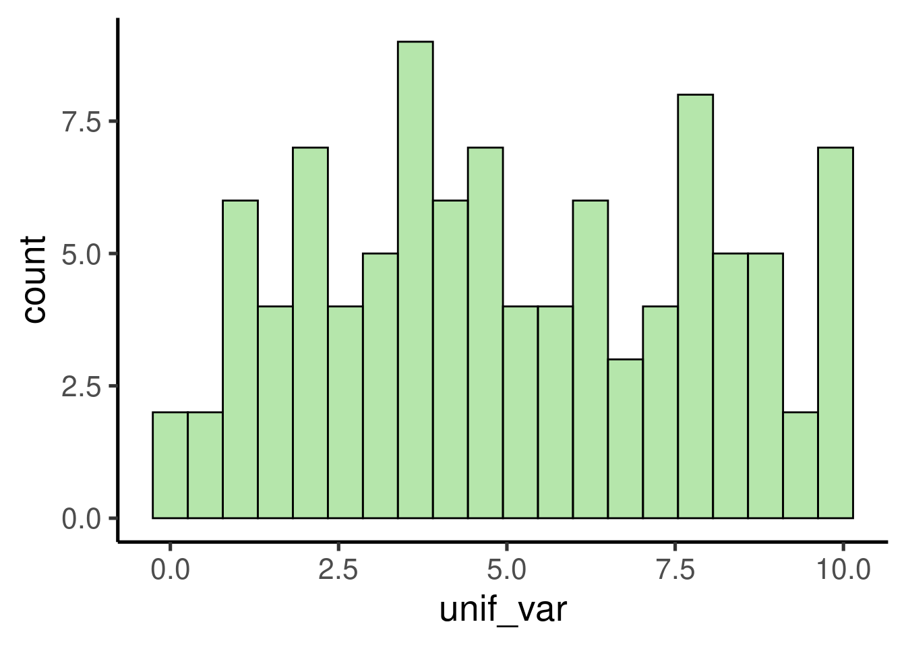
Muestra una distribución uniforme que va de 0 a 10.
También podemos simular números aleatorios procedentes de una
distribución normal utilizando rnorm():
# crear una variable normal
norm_var <- rnorm(n = 1000, mean = 2, sd = 1)
# graficar histograma
ggplot(data = data.frame(norm_var), mapping = aes(x = norm_var)) +
geom_histogram()
Tenga en cuenta que todas las funciones generadoras de números aleatorios tienen el argumento ‘n’, que determina la longitud del vector generado (es decir, el número de números aleatorios), además de algunos argumentos adicionales relacionados con parámetros específicos de la distribución.
Las variables continuas (es decir, los vectores numéricos) pueden convertirse en variables discretas (es decir, números enteros) simplemente redondeándolas:
## [1] 15.426886 8.544965 15.138700 8.920290 9.369333## [1] 15 9 15 9 9
Ejercicio 1
¿Qué hacen las funciones
rbinom()yrexp()?Ejecutela y haga histogramas de sus resultados
¿Qué hacen los argumentos ‘mean’ y ‘sd’ en
rnorm()? Juege con diferentes valores y comprueba el histograma para hacerse una idea de su efecto en la simulación
Generación de variables categóricas
La forma más sencilla de generar variables categóricas es utilizar el
vector de ejemplo letters' (oLETTERS’) para asignar niveles
de categoría. Podemos hacerlo utilizando la función rep().
Por ejemplo, el siguiente código crea un vector categórico (caracteres)
con dos niveles, cada uno con 4 observaciones:
## [1] "a" "a" "a" "a" "b" "b" "b" "b"
También podemos replicar este patrón utilizando el argumento ‘times’. Este código replica el vector anterior 2 veces:
## [1] "a" "a" "a" "a" "b" "b" "b" "b" "a" "a" "a" "a" "b" "b" "b" "b"
Otra opción es simular una variable a partir de una distribución binomial y luego convertirla en un factor:
## [1] 1 0 0 1 1 0 0 0 0 0 0 0 1 1 1 0 0 1 0 1 0 0 0 0 0 0 0 1 0 1 1 1 0 0 0 1 0 0
## [39] 1 1 0 0 0 0 0 1 0 1 1 1## [1] b a a b b a a a a a a a b b b a a b a b a a a a a a a b a b b b a a a b a a
## [39] b b a a a a a b a b b b
## Levels: a b
Muestreo aleatorio
La otra herramienta importante de R para jugar con datos simulados es
sample(). Esta función permite tomar muestras de tamaños
específicos de vectores. Por ejemplo, tomemos el ejemplo del vector
‘letters’:
## [1] "a" "b" "c" "d" "e" "f" "g" "h" "i" "j" "k" "l" "m" "n" "o" "p" "q" "r" "s"
## [20] "t" "u" "v" "w" "x" "y" "z"
Podemos tomar una muestra de este vector como es:
## [1] "i" "r" "q" "a" "c" "m" "y" "z" "u" "v"
El argumento ‘size’ nos permite determinar el tamaño de la muestra. Tenga en cuenta que obtendremos un error si el tamaño es mayor que el propio vector:
## Error in sample.int(length(x), size, replace, prob): cannot take a sample larger than the population when 'replace = FALSE'
Esto sólo puede hacerse cuando el muestreo es con reemplazo
(replacement). El muestreo con reemplazo puede aplicarse estableciendo
el argumento replace = TRUE:
## [1] "j" "i" "h" "i" "k" "u" "n" "i" "w" "k" "c" "t" "m" "p" "i" "h" "d" "w" "c"
## [20] "q" "j" "e" "e" "j" "k" "c" "l" "t" "r" "h"
Iterar un proceso
A menudo, las simulaciones deben repetirse varias veces para
descartar resultados espurios debidos al azar o simplemente para probar
diferentes parámetros. Las funciones de simulación de datos mencionadas
anteriormente pueden ejecutarse varias veces (por ejemplo, iteradas)
utilizando la función replicate():
# replicar
repl_rnorm <- replicate(n = 3, expr = rnorm(2), simplify = FALSE)
# ver clase
class(repl_rnorm)## [1] "list"## [[1]]
## [1] 1.1918356 -0.3399238
##
## [[2]]
## [1] 0.7891082 -0.6321324
##
## [[3]]
## [1] -1.4931226 -0.1344123
Hacer que las simulaciones sean reproducibles
El último truco que necesitamos para ejecutar simulaciones en R es la
capacidad de reproducir una simulación (es decir, obtener exactamente
los mismos datos y resultados simulados). Esto puede ser útil para que
otros investigadores puedan ejecutar nuestros análisis exactamente de la
misma manera. Esto puede hacerse fácilmente con la función
set.seed(). Pruebe a ejecutar el siguiente código. Debería
obtener la misma salida:
## [1] 0.5074782 0.3067685Crear juegos de datos
Juegos de datos con variables numéricas y categóricas
Ahora que sabemos cómo simular variables continuas y categóricas.
Podemos juntarlas para crear conjuntos de datos simulados. Esto se puede
hacer utilizando la función data.frame():
# create categorical variable
group <- rep(letters[1:2], each = 3)
# create continous data
size <- rnorm(n = 6, mean = 5, sd = 1)
# put them together in a data frame
df <- data.frame(group, size)
# print
df| group | size |
|---|---|
| a | 4.8157 |
| a | 3.6287 |
| a | 4.4008 |
| b | 5.2945 |
| b | 5.3898 |
| b | 3.7919 |
Por supuesto, podríamos añadir más variables a este marco de datos:
# crear variable categorica
group <- rep(letters[1:2], each = 3)
individual <- rep(LETTERS[1:6])
# crear variables continuas
size <- rnorm(n = 6, mean = 5, sd = 1)
weight <- rnorm(n = 6, mean = 100, sd = 10)
# poner todo en un data frame
df <- data.frame(group, individual, size, weight)
# imprimir
df| group | individual | size | weight |
|---|---|---|---|
| a | A | 4.6363 | 109.8744 |
| a | B | 3.3733 | 107.4139 |
| a | C | 4.7435 | 100.8935 |
| b | D | 6.1018 | 90.4506 |
| b | E | 5.7558 | 98.0485 |
| b | F | 4.7618 | 109.2552 |
And that’s a simulated data set in its most basic form. That looks a lot like the kind of data we use to work with in the biological science.
Cómo utilizar datos simulados para entender el comportamiento de las herramientas estadísticas
Prueba de concepto: el Teorema Central del Límite
El Teorema del Límite Central afirma que, si tomamos repetidas muestras aleatorias de una población, las medias de esas muestras se ajustarán a una distribución normal, aunque la población no esté distribuida normalmente. Además, la distribución normal resultante debe tener una media cercana a la media de la población. El teorema es un concepto clave para la estadística inferencial, ya que implica que los métodos estadísticos que funcionan para las distribuciones normales pueden ser aplicables a muchos problemas que implican otros tipos de distribuciones. No obstante, el objetivo aquí es sólo mostrar cómo se pueden utilizar las simulaciones para entender el comportamiento de los métodos estadísticos.
Para comprobar si esas afirmaciones básicas sobre el Teorema del Límite Central son ciertas, podemos utilizar datos simulados en R. Vamos a simular una población de 1000 observaciones con una distribución uniforme:
# simular popublacion uniforme
unif_pop <- runif(1000, min = 0, max = 10)
# ver histograma
ggplot(data = data.frame(unif_pop), mapping = aes(x = unif_pop)) +
geom_histogram()
Podemos tomar muestras aleatorias usando sample()
así:
## [1] 9.2841984 1.0262565 2.5751741 3.3248460 6.8998985 2.2940436 0.3373657
## [8] 8.2136568 3.3036362 8.0379320 2.5917392 7.8177006 5.6542576 0.6383126
## [15] 2.8347032 4.2043442 4.7632983 4.4219338 6.9782974 7.9262477 0.6812050
## [22] 3.5232307 6.5110308 5.3828892 7.9721010 1.8006177 4.2128214 3.3386579
## [29] 8.9122284 4.7116278
Este proceso puede ser replicado varias veces con
replicate():
El código anterior toma 100 muestras con 30 valores cada una. Ahora podemos comprobar la distribución de las muestras:
# ver distribucion/ histograma
ggplot(data = data.frame(samples), mapping = aes(x = samples)) + geom_histogram()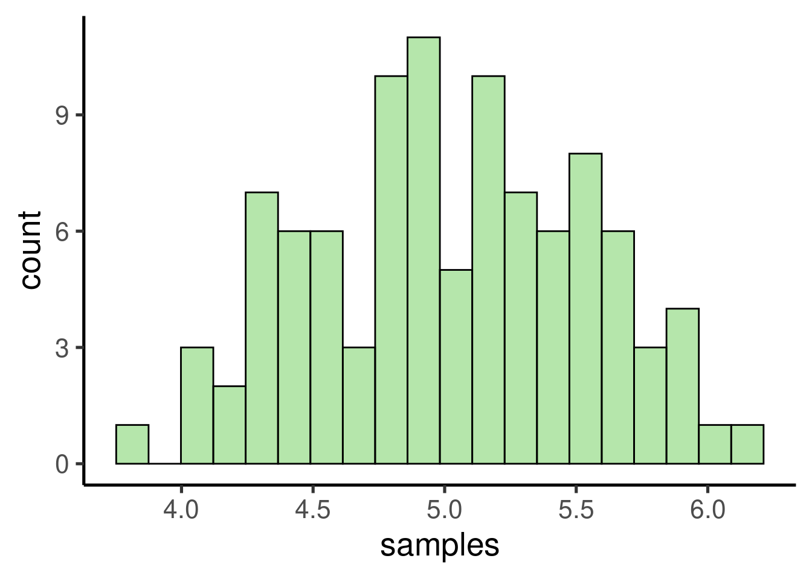
… asi como el promedio:
## [1] 5.021219
Como era de esperar, las muestras siguen una distribución normal con una media cercana a la media de la población, que es:
## [1] 5.052715
Probemos con una distribución más compleja. Por ejemplo, una distribución bimodal:
# usar semilla
set.seed(123)
# simular variables
norm1 <- rnorm(n = 1000, mean = 10, sd = 3)
norm2 <- rnorm(n = 1000, mean = 20, sd = 3)
# juntar en una sola variable
bimod_pop <- c(norm1, norm2)
# ver histograma
ggplot(data = data.frame(bimod_pop), mapping = aes(x = bimod_pop)) +
geom_histogram()
# replicar muestreo
samples <- replicate(200, mean(sample(bimod_pop, 10)))
# ver histograma
ggplot(data = data.frame(samples), mapping = aes(x = samples)) + geom_histogram()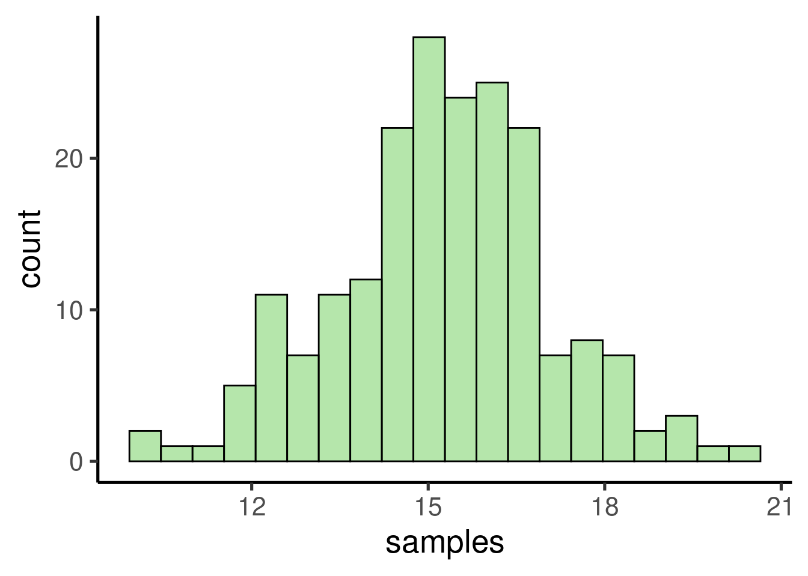
## [1] 15.23058## [1] 15.08789
Ejercicio 2
Intenta explorar el Teorema del Límite Central como en el caso anterior, pero esta vez utilizando:
- Una distribución exponencial (
rexp()) - Una distribución binomial (
rbinom())
- Una distribución exponencial (
- Para cada distribución: grafique un histograma y compare los promedios de la población y de las muestras
Las regresiones lineales se basan en la ecuación lineal a = mx + b que aprendimos en el colegio. La representación formal tiene este aspecto:
\(\hat{Y}\): variable respuesta
\(\beta_{o}\): intercepto
\(\beta_{1}\): estimado de la magnitud del efecto de \(x_{1}\) en \(\hat{Y}\) (también conocido como tamaño del efecto, coeficiente o simplemente “estimado”)
\(x_{1}\): variable predictora
El objetivo más común de una regresión lineal es la estimación de los valores de \({beta_{*}\). Esto se consigue encontrando la línea recta que mejor se ajusta y que representa la asociación entre un predictor y la respuesta:

Estos \(\beta_{*}\) son el tamaño del efecto estimado del predictor correspondiente (por ejemplo, \(\beta_{1}\) es el tamaño del efecto \(x_{1}\)). Su valor representa el cambio medio en \(\hat{Y}\) (en unidades \(\hat{Y}\)) para una unidad de cambio en \(\beta_{*}\). Por lo tanto, la hipótesis nula es que esos \(\beta_{*}\) no son diferentes de 0:
lo que equivale a esto:

Regresión lineal en R
Para sacar el máximo provecho de los modelos lineales necesitamos
sentirnos cómodos con ellos. Empezaremos explorando la función de
regresión lineal de R lm(). En R la mayoría de los modelos
lineales y sus extensiones comparten formatos comunes de entrada de
datos y resultados, lo que facilita su aplicación una vez que entendemos
sus fundamentos.
Utilizaremos el conjunto de datos ‘trees’ que viene por defecto con R. ‘trees’ proporciona medidas del diámetro (etiquetado como ‘Girth’), altura y volumen de 31 cerezos talados:
| Girth | Height | Volume |
|---|---|---|
| 8.3 | 70 | 10.3 |
| 8.6 | 65 | 10.3 |
| 8.8 | 63 | 10.2 |
| 10.5 | 72 | 16.4 |
| 10.7 | 81 | 18.8 |
| 10.8 | 83 | 19.7 |
La función básica de R para construir un modelo lineal es
lm(). Veamos los componentes básicos de un modelo de
regresión utilizando lm():

Podemos ajustar este modelo para ver el resultado:
##
## Call:
## lm(formula = Height ~ Girth, data = trees)
##
## Residuals:
## Min 1Q Median 3Q Max
## -12.5816 -2.7686 0.3163 2.4728 9.9456
##
## Coefficients:
## Estimate Std. Error t value Pr(>|t|)
## (Intercept) 62.0313 4.3833 14.152 1.49e-14 ***
## Girth 1.0544 0.3222 3.272 0.00276 **
## ---
## Signif. codes: 0 '***' 0.001 '**' 0.01 '*' 0.05 '.' 0.1 ' ' 1
##
## Residual standard error: 5.538 on 29 degrees of freedom
## Multiple R-squared: 0.2697, Adjusted R-squared: 0.2445
## F-statistic: 10.71 on 1 and 29 DF, p-value: 0.002758
Esto es lo que significan los elementos de la salida:
Llamada (call): la función y los parámetros que se utilizaron para crear el modelo
Residuales (residuals): distribución de los residuales. Los residuales son la diferencia entre lo que predijo el modelo y el valor real de y. Esta es una representación gráfica de los residuales:
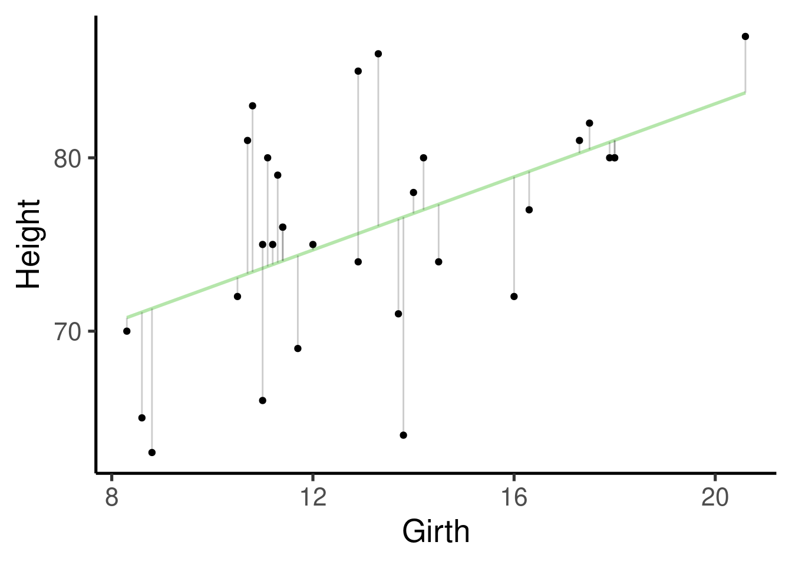
Coeficientes: contiene los tamaños de efecto (‘Estimates’), una medida de su incertidumbre (‘Standar error’), la estadística asociada (‘t value’) y el valor p (‘Pr(>|t|)’). Los tamaño de efecto o estimados se dan como el cambio promedio en y por cada aumento de 1 unidad en x. Para este ejemplo el estimado es de 1,0544 \(in / in\). A pesar de que las unidades se anulan (`1,0544 \(in / in\) = 1,0544) tenerlas en cuenta sigue siendo biológicamente significativo. Significan que, en promedio, y un aumento de 1 pulgada en la circunferencia que se espera un aumento de 1,0544 pulgadas en la altura.
Error estándar de los residuales: se explica por sí mismo. El error estándar de los residuales
R-cuadrado múltiple: el coeficiente de determinación, que pretende ser una medida de lo bien que su modelo se ajusta a los datos
R-cuadrado ajustado: similar al ‘R-cuadrado múltiple’ pero penalizado por el número de parámetros
Estadístico F: estadístico para una prueba global que comprueba si al menos uno de sus coeficientes es distinto de cero
Valor de p: probabilidad de una prueba global que comprueba si al menos uno de sus coeficientes es distinto de cero
Utilizaremos lm() para mostrar la flexibilidad de los
modelos de regresión. Los componentes de regresión se añadirán
gradualmente para que podamos tomarnos el tiempo de entender cada uno de
ellos así como los correspondientes cambios en la salida de la
regresión.
Modelo solo con intercepto
Primero vamos a crear una variable numérica de respuesta:
# set seed
set.seed(123)
# number of observations
n <- 50
# random variables
y <- rnorm(n = n, mean = 0, sd = 1)
# put it in a data frame
y_data <- data.frame(y)
Esta única variable puede introducirse en un modelo de
regresión sólo con itercepto. Para ello, debemos suministrar la
fórmula del modelo y los datos a lm():
Lo que equivale a:
Podemos obtener el resumen por defecto de los resultados del modelo
ejecutando summary() en el objeto de salida ‘y_mod’:
##
## Call:
## lm(formula = y ~ 1, data = y_data)
##
## Residuals:
## Min 1Q Median 3Q Max
## -2.0010 -0.5937 -0.1070 0.6638 2.1345
##
## Coefficients:
## Estimate Std. Error t value Pr(>|t|)
## (Intercept) 0.0344 0.1309 0.263 0.794
##
## Residual standard error: 0.9259 on 49 degrees of freedom
Puede ser bastante informativo graficar los tamaños de efecto (aunque en este caso sólo tenemos uno):
ci_df <- data.frame(param = names(y_mod$coefficients), est = y_mod$coefficients,
confint(y_mod))
ggplot(ci_df, aes(x = param, y = est)) + geom_hline(yintercept = 0,
color = "red", lty = 2) + geom_pointrange(aes(ymin = X2.5.., ymax = X97.5..)) +
labs(x = "Parámetro", y = "Tamaño de efecto") + coord_flip()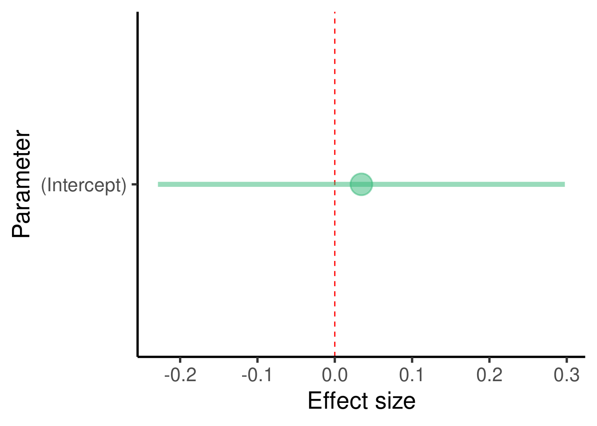
Para evaluar la importancia de la asociación nos centramos en la tabla de coeficientes:
## Estimate Std. Error t value Pr(>|t|)
## (Intercept) 0.03440355 0.1309378 0.2627473 0.793847En este ejemplo no hay predictores en el modelo, por lo que sólo tenemos una estimación para el intercepto (\(\beta_0\))
El modelo nos dice que el intercepto se estima en 0.0344035 y que este valor no es significativamente diferente de 0 (valor p = 0.793847)
En este caso el intercepto es simplemente la media de la variable de respuesta
## [1] 0.03440355
- Rara vez tenemos predicciones sobre el intercepto, por lo que tendemos a ignorar esta estimación.
Ejercicio 3
Cambie el argumento ‘mean’ en la llamada de la función “rnorm()` (línea 105) por un valor distinto de 0 y observe cómo cambian los valores en la tabla de coeficientes
Cambia el argumento
sden la llamada a la funciónrnorm()(línea 105) por un valor más alto y observe cómo cambian los valores en la tabla de coeficientes
Añadir un predictor no asociado
Podemos crear 2 variables numéricas no relacionadas así:
# set seed
set.seed(123)
# number of observations
n <- 50
# random variables
y <- rnorm(n = n, mean = 0, sd = 1)
x1 <- rnorm(n = n, mean = 0, sd = 1)
# create data frame
xy_data <- data.frame(x1, y)
Estas dos variables pueden introducirse en un modelo de regresión para evaluar la asociación entre ellas:
# build model
xy_mod <- lm(formula = y ~ x1, data = xy_data)
# plot
ggplot(xy_data, aes(x = x1, y = y)) + geom_smooth(method = "lm", se = FALSE) +
geom_point() # plot points
Que es equivalente a esto:
Imprimimamos el resumen de este modelo:
##
## Call:
## lm(formula = y ~ x1, data = xy_data)
##
## Residuals:
## Min 1Q Median 3Q Max
## -2.0044 -0.6239 -0.1233 0.6868 2.1061
##
## Coefficients:
## Estimate Std. Error t value Pr(>|t|)
## (Intercept) 0.03977 0.13396 0.297 0.768
## x1 -0.03668 0.14750 -0.249 0.805
##
## Residual standard error: 0.9349 on 48 degrees of freedom
## Multiple R-squared: 0.001287, Adjusted R-squared: -0.01952
## F-statistic: 0.06184 on 1 and 48 DF, p-value: 0.8047
… y graficar los tamaños de efecto:
ci_df <- data.frame(param = names(xy_mod$coefficients), est = xy_mod$coefficients,
confint(xy_mod))
ggplot(ci_df, aes(x = param, y = est)) + geom_hline(yintercept = 0,
color = "red", lty = 2) + geom_pointrange(aes(ymin = X2.5.., ymax = X97.5..)) +
labs(x = "Parámetro", y = "Tamaño de efecto") + coord_flip()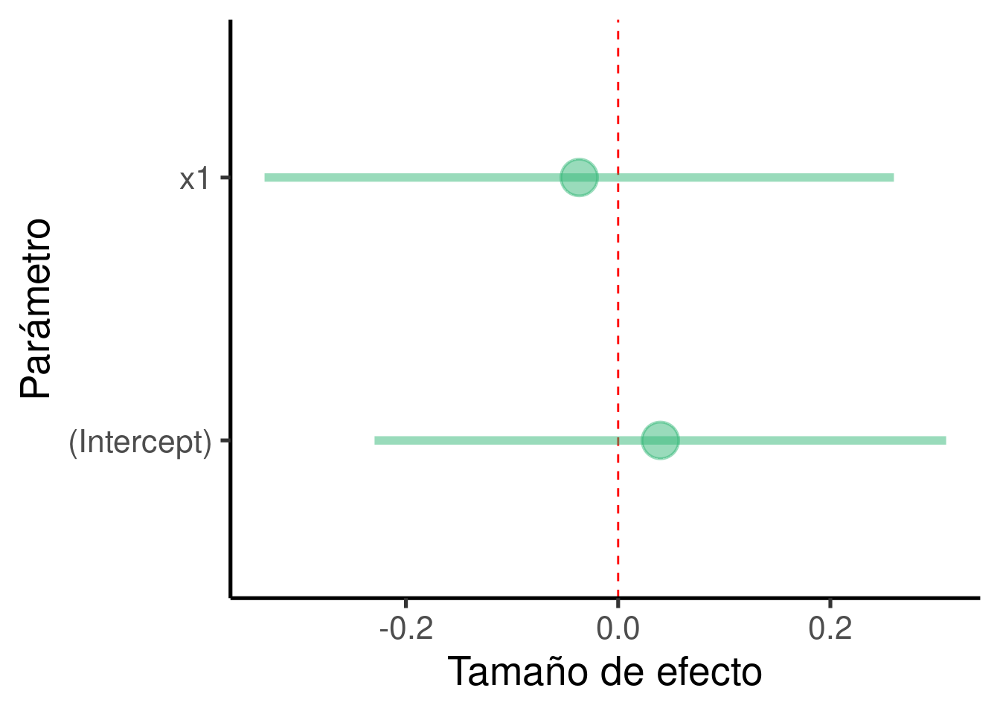
Deberíamos “diagnosticar” la idoneidad del modelo inspeccionando más
de cerca la distribución de los residuales. La función
plot_model() del paquete sjPlot hace un buen
trabajo para crear gráficos de diagnóstico para modelos lineales:
## [[1]]
##
## [[2]]
##
## [[3]]
Cuadro con coeficientes:
## Estimate Std. Error t value Pr(>|t|)
## (Intercept) 0.03977364 0.1339616 0.2969033 0.7678214
## x1 -0.03667889 0.1474982 -0.2486735 0.8046743
En este ejemplo hemos añadido un predictor al modelo, por lo que hemos obtenido una estimado adicional (y una fila extra, ‘x1’)
El modelo nos dice que la estimación de ‘x1’ es -0.0366789 y que no es significativamente diferente de 0 (valor de p = 0.8046743)
Simulating an associated predictor
We can use the linear model formula above to simulate two associated continuous variables like this:
# set seed
set.seed(123)
# number of observations
n <- 50
b0 <- -4
b1 <- 3
error <- rnorm(n = n, sd = 3)
# random variables
x1 <- rnorm(n = n, mean = 0, sd = 1)
y <- b0 + b1 * x1 + error
# create data frame
xy_data2 <- data.frame(x1, y)
Note that we also added an error term, so the association is not perfect. Let’s run the model and plot the association between the two variables:
# build model
xy_mod2 <- lm(formula = y ~ x1, data = xy_data2)
# plot
ggplot(xy_data2, aes(x = x1, y = y)) + geom_smooth(method = "lm",
se = FALSE) + geom_point() # plot points
The formula is the same than the previous model:
This is the summary of the model:
##
## Call:
## lm(formula = y ~ x1, data = xy_data2)
##
## Residuals:
## Min 1Q Median 3Q Max
## -6.0133 -1.8718 -0.3698 2.0604 6.3185
##
## Coefficients:
## Estimate Std. Error t value Pr(>|t|)
## (Intercept) -3.8807 0.4019 -9.656 7.86e-13 ***
## x1 2.8900 0.4425 6.531 3.85e-08 ***
## ---
## Signif. codes: 0 '***' 0.001 '**' 0.01 '*' 0.05 '.' 0.1 ' ' 1
##
## Residual standard error: 2.805 on 48 degrees of freedom
## Multiple R-squared: 0.4705, Adjusted R-squared: 0.4595
## F-statistic: 42.65 on 1 and 48 DF, p-value: 3.854e-08
.. the effect size plot:
ci_df <- data.frame(param = names(xy_mod2$coefficients), est = xy_mod2$coefficients,
confint(xy_mod2))
ggplot(ci_df, aes(x = param, y = est)) + geom_hline(yintercept = 0,
color = "red", lty = 2) + geom_pointrange(aes(ymin = X2.5.., ymax = X97.5..)) +
labs(x = "Parámetro", y = "Tamaño de efecto") + coord_flip()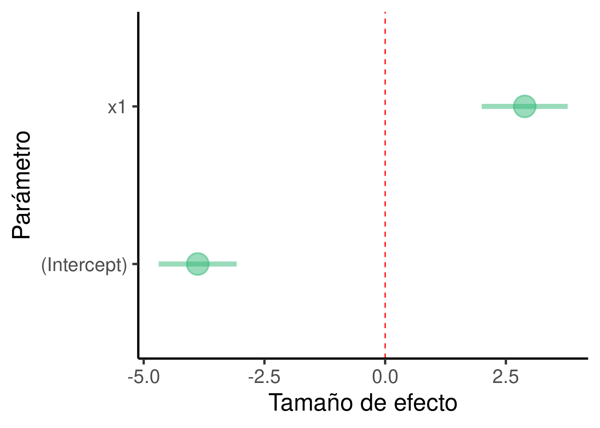
… and the model diagnostic plots:
## [[1]]
##
## [[2]]
##
## [[3]]
Coefficients table:
## Estimate Std. Error t value Pr(>|t|)
## (Intercept) -3.880679 0.4018848 -9.656198 7.861629e-13
## x1 2.889963 0.4424946 6.531071 3.853652e-08The model tells us that \(\beta_1\) (the effect size of ‘x1’) is 2.8899633 and that it is significantly different from 0 (p-value = 3.8536524^{-8})
The simulated values for the regression parameters can be compared to the summary of the
lm()model to get a sense of the model precision:- \(\beta_1\) (the effect size of ‘x1’) was set to 3 and was estimated as 2.89 by the model
Ejercicio
Increase the sample size (
n) to 1000 or higherHow did the effect size (\(\beta\)) estimates change?
How did the standard error of the effect size change?
Now change
nto 15 and check again the model estimates (this time check the p-value as well)
Adding more than 1 predictor: multiple regression
Multiple linear regression is an extension of the simple linear regression model that can take several predictors:
The formula looks a bit busy, but it only means that any additional parameter will have its own estimate (\(\beta\)). The formula for a two-predictor linear regression looks like this:
.. and it can be simulated like this:
# set seed
set.seed(123)
# number of observations
n <- 50
b0 <- -4
b1 <- 3
b2 <- -2
error <- rnorm(n = n, mean = 0, sd = 3)
# random variables
x1 <- rnorm(n = n, mean = 0, sd = 1)
x2 <- rnorm(n = n, mean = 0, sd = 1)
y <- b0 + b1 * x1 + b2 * x2 + error
# create data frame
xy_data_multp <- data.frame(x1, x2, y)
# build model
xy_mod_multp <- lm(formula = y ~ x1 + x2, data = xy_data_multp)
summary(xy_mod_multp)##
## Call:
## lm(formula = y ~ x1 + x2, data = xy_data_multp)
##
## Residuals:
## Min 1Q Median 3Q Max
## -5.9861 -1.8931 -0.3633 2.0017 6.4127
##
## Coefficients:
## Estimate Std. Error t value Pr(>|t|)
## (Intercept) -3.8652 0.4169 -9.270 3.49e-12 ***
## x1 2.9015 0.4526 6.411 6.41e-08 ***
## x2 -1.9324 0.4142 -4.665 2.59e-05 ***
## ---
## Signif. codes: 0 '***' 0.001 '**' 0.01 '*' 0.05 '.' 0.1 ' ' 1
##
## Residual standard error: 2.833 on 47 degrees of freedom
## Multiple R-squared: 0.6116, Adjusted R-squared: 0.595
## F-statistic: 37 on 2 and 47 DF, p-value: 2.234e-10
… plot the effect sizes:
ci_df <- data.frame(param = names(xy_mod_multp$coefficients), est = xy_mod_multp$coefficients,
confint(xy_mod_multp))
ggplot(ci_df, aes(x = param, y = est)) + geom_hline(yintercept = 0,
color = "red", lty = 2) + geom_pointrange(aes(ymin = X2.5.., ymax = X97.5..)) +
labs(x = "Parámetro", y = "Tamaño de efecto") + coord_flip()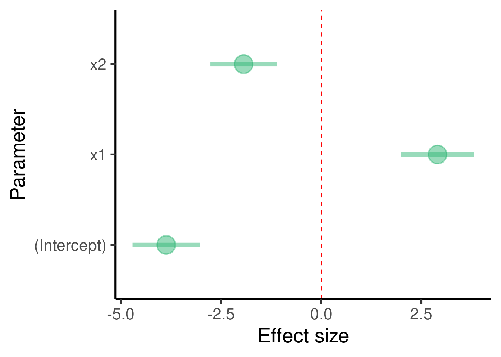
… and the model diagnostic plots:
## [[1]]
##
## [[2]]
##
## [[3]]
Coefficients table:
## Estimate Std. Error t value Pr(>|t|)
## (Intercept) -3.865192 0.4169493 -9.270172 3.485630e-12
## x1 2.901499 0.4525965 6.410785 6.413676e-08
## x2 -1.932353 0.4142204 -4.665035 2.585128e-05The model found that \(\beta_1\) (the effect size of ‘x1’) is 2.9014993 and that it is significantly different from 0 (p-value = 6.4136764^{-8})
It also found that the \(\beta_2\) (the effect size of ‘x2’) is -1.9323526 and that it is also significantly different from 0 (p-value = 2.5851282^{-5})
The simulated values for the regression parameters can be compared to the summary of the
lm()model to get a sense of the model precision:\(\beta_1\) was set to 3 and was estimated as 2.901
\(\beta_2\) (the effect size of ‘x2’) was set to -2 and was estimated as -1.932
Ejercicio
Set one of the effect sizes (\(\beta\)) to 0 (or very close to 0) and run again the model and its summary
How did the p-value change?
Simulate a scenario with two predictors in which only one of them is associated with the response
There is an important point to stress here: Multiple regression estimate the effect of a predictor after accounting for the effect of the other predictors in the model. In other words, new predictors in the model will attempt to explain variation in the data that was not explained by the other predictors. So the result of the multiple regression is not equivalent to the results of simple linear regressions on the same predictors. This can be easily shown by running those regressions:
# build models
x1y_mod <- lm(formula = y ~ x1, data = xy_data)
x2y_mod <- lm(formula = y ~ x2, data = xy_data)
# shortcut to coefficients
coef(xy_mod)## (Intercept) x1
## 0.03977364 -0.03667889## (Intercept) x1
## 0.03977364 -0.03667889## (Intercept) x2
## 0.04131955 0.02723902
The estimates for the same variables vary considerably between the multiple regression and the single predictor regressions.
This point is further demonstrated by the fact that, if one of the predictors has no influence at all on the response, the effect of the additional predictor will converge to its effect in a simple linear regression. To simulate this scenario we set b2 to 0:
# set seed
set.seed(123)
# number of observations
n <- 50
b0 <- -4
b1 <- 3
b2 <- 0
error <- rnorm(n = n, mean = 0, sd = 1)
# random variables
x1 <- rnorm(n = n, mean = 0, sd = 1)
x2 <- rnorm(n = n, mean = 0, sd = 1)
y <- b0 + b1 * x1 + b2 * x2 + error
# create data frame
xy_data <- data.frame(x1, x2, y)
# build model
xy_mod <- lm(formula = y ~ x1 + x2, data = xy_data)
x1y_mod <- lm(formula = y ~ x1, data = xy_data)
# shortcut to coefficients
coef(xy_mod)## (Intercept) x1 x2
## -3.95506411 2.96716643 0.02254914## (Intercept) x1
## -3.960226 2.963321The estimate for \(\beta_1\) was almost the same in the multiple regression (2.9671664) and the single predictor regression (2.9633211)
For convenience we used coef() to extract only the
estimates from the regression, but the values are the same we get with
summary(model).
Having a categorical predictor
For categorical predictors we can first create a binary (0, 1) variable and then add labels to each value:
# set seed
set.seed(13)
# number of observations
n <- 50
b0 <- -3
b1 <- 2
error <- rnorm(n = n, mean = 0, sd = 3)
# random variables
x1_num <- sample(0:1, size = n, replace = TRUE)
y <- b0 + b1 * x1_num + error
x1 <- factor(x1_num, labels = c("a", "b"))
# create data frame
xy_data_cat <- data.frame(x1, x1_num, y)
head(xy_data_cat)| x1 | x1_num | y |
|---|---|---|
| b | 1 | 0.6630 |
| a | 0 | -3.8408 |
| a | 0 | 2.3255 |
| b | 1 | -0.4380 |
| a | 0 | 0.4276 |
| a | 0 | -1.7534 |
And this is how it is formally written:
Same thing as with continuous predictors.
We can explore the pattern in the data using a boxplot:
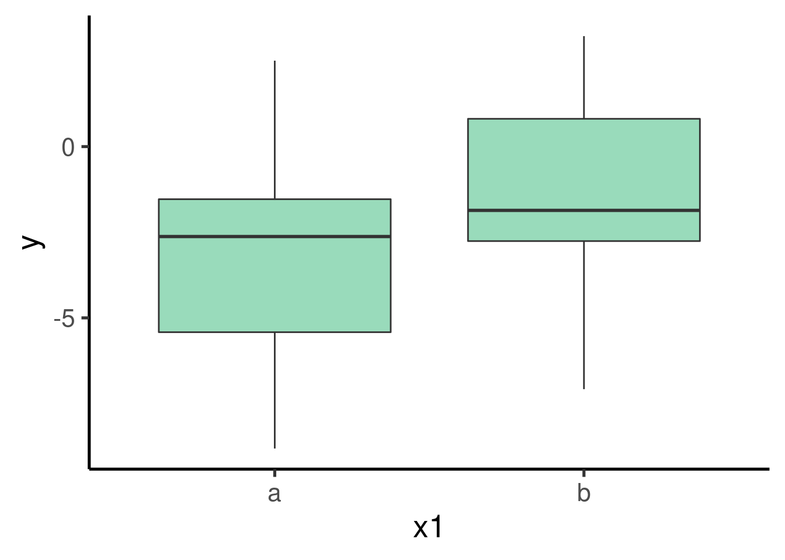
… and get the estimates of the model:
##
## Call:
## lm(formula = y ~ x1, data = xy_data_cat)
##
## Residuals:
## Min 1Q Median 3Q Max
## -5.8977 -1.9092 -0.0936 1.8090 5.5059
##
## Coefficients:
## Estimate Std. Error t value Pr(>|t|)
## (Intercept) -2.9974 0.5583 -5.369 2.27e-06 ***
## x1b 1.8140 0.8416 2.155 0.0362 *
## ---
## Signif. codes: 0 '***' 0.001 '**' 0.01 '*' 0.05 '.' 0.1 ' ' 1
##
## Residual standard error: 2.954 on 48 degrees of freedom
## Multiple R-squared: 0.08825, Adjusted R-squared: 0.06925
## F-statistic: 4.646 on 1 and 48 DF, p-value: 0.03617
… plot the effect sizes:
ci_df <- data.frame(param = names(xy_mod_cat$coefficients), est = xy_mod_cat$coefficients,
confint(xy_mod_cat))
ggplot(ci_df, aes(x = param, y = est)) + geom_hline(yintercept = 0,
color = "red", lty = 2) + geom_pointrange(aes(ymin = X2.5.., ymax = X97.5..)) +
labs(x = "Parámetro", y = "Tamaño de efecto") + coord_flip()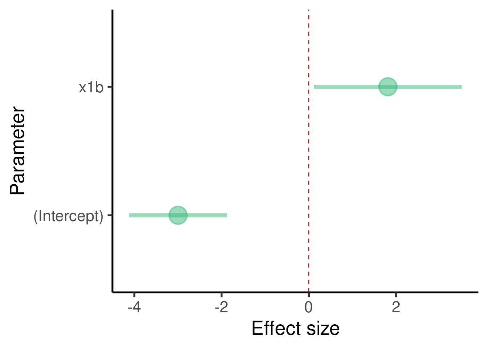
… and the model diagnostic plots:

Coefficients table:
## Estimate Std. Error t value Pr(>|t|)
## (Intercept) -2.997415 0.5582513 -5.369293 2.267724e-06
## x1b 1.813997 0.8415955 2.155426 3.617227e-02The model found that \(\beta_1\) (the effect size of ‘x1’) is 1.8139973 and that it is significantly different from 0 (p-value = 0.0361723)
The simulated values for the regression parameters can be compared to the summary of the
lm()model to get a sense of the model precision:- \(\beta_1\) was set to 2 and was estimated as 1.814
Note that in this case the intercept refers to the estimate for the level ‘a’ in the categorical predictor, which was used as a baseline:
# plot
ggplot(xy_data_cat, aes(x = x1, y = y)) + geom_boxplot() + geom_hline(yintercept = xy_mod_cat$coefficients[1],
col = "blue")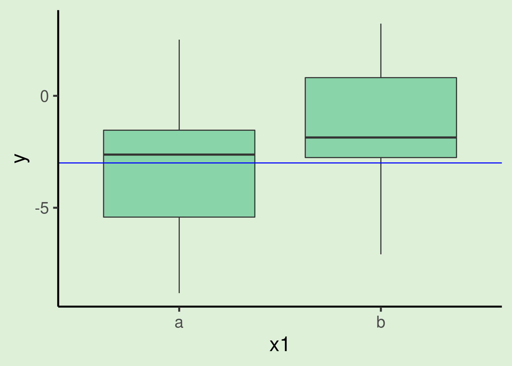
- Hence the intercept is the same as the mean of y for the category ‘a’:
## [1] -2.997415- Note also that the estimate label is ‘x1b’, not ‘x1’ as in the continuous predictors. This is because in this case the estimate refers to the difference between the two levels of the categorical variable (‘a’ and ‘b’). More specifically, it tells us that in average observations from category ‘b’ are 1.814 higher than observations in category ‘a’.
Ejercicio
- Unbalanced data when having categories (i.e. some categories have way more observations than others) can be problematic for statistical inference. Modify the code above to simulate a highly unbalanced data set and check the precision of the model.
In a regression model categorical predictors are also represented as numeric vectors. More precisely, categorical predictors are coded as 0s and 1s, in which 1 means ‘belongs to the same category’ and 0 ‘belongs to a different category’. We kept the original numeric vector (‘x1_num’) when simulating the data set with the categorical predictor:
| x1 | x1_num | y |
|---|---|---|
| b | 1 | 0.6630 |
| a | 0 | -3.8408 |
| a | 0 | 2.3255 |
| b | 1 | -0.4380 |
| a | 0 | 0.4276 |
| a | 0 | -1.7534 |
Note that ‘b’s in the ’x1’ column are converted into 1 in the ‘x1_num’ column and ’a’s converted into 0. This is called an indicator variable and the process is known as dummy coding.
We can actually use the numeric vector in the regression model and get the exact same results:
## Estimate Std. Error t value Pr(>|t|)
## (Intercept) -2.997415 0.5582513 -5.369293 2.267724e-06
## x1b 1.813997 0.8415955 2.155426 3.617227e-02# build model with dummy variable
xy_mod_num <- lm(formula = y ~ x1_num, data = xy_data_cat)
# summary with dummy coding
summary(xy_mod_num)$coefficients## Estimate Std. Error t value Pr(>|t|)
## (Intercept) -2.997415 0.5582513 -5.369293 2.267724e-06
## x1_num 1.813997 0.8415955 2.155426 3.617227e-02
Things get a bit more complicated when dummy coding a categorical predictor with more than two levels. But the logic is the same.
Interaction terms
A statistical interaction refers to an effect of a response variable that is mediated by a second variable.
This is easier to understand by looking at the interaction of a continuous and a binary variable:
# set seed
set.seed(123)
# number of observations
n <- 50
b0 <- -4
b1 <- 3
b2 <- 1.7
b3 <- -3
error <- rnorm(n = n, mean = 0, sd = 3)
# random variables
x1 <- rbinom(n = n, size = 1, prob = 0.5)
x2 <- rnorm(n = n, mean = 0, sd = 1)
# interaction is added as the product of x1 and x2
y <- b0 + b1 * x1 + b2 * x2 + b3 * x1 * x2 + error
x1 <- factor(x1, labels = c("a", "b"))
# create data frame
xy_data_intr <- data.frame(x1, x2, y)
head(xy_data_intr)| x1 | x2 | y |
|---|---|---|
| b | 1.0256 | -4.0147 |
| a | -0.2848 | -5.1746 |
| a | -1.2207 | -1.3991 |
| b | 0.1813 | -1.0242 |
| a | -0.1389 | -3.8483 |
| b | 0.0058 | 4.1377 |
# build model
xy_mod_intr <- lm(formula = y ~ x1 + x2 + x1 * x2, data = xy_data_intr)
# save summary to make best fit lines
xy_summ_intr <- summary(xy_mod_intr)
xy_summ_intr##
## Call:
## lm(formula = y ~ x1 + x2 + x1 * x2, data = xy_data_intr)
##
## Residuals:
## Min 1Q Median 3Q Max
## -6.2220 -1.6639 -0.1575 1.6503 6.3832
##
## Coefficients:
## Estimate Std. Error t value Pr(>|t|)
## (Intercept) -4.1930 0.5702 -7.353 2.70e-09 ***
## x1b 3.5974 0.8061 4.463 5.19e-05 ***
## x2 1.3274 0.6816 1.947 0.05761 .
## x1b:x2 -2.9720 0.9623 -3.089 0.00341 **
## ---
## Signif. codes: 0 '***' 0.001 '**' 0.01 '*' 0.05 '.' 0.1 ' ' 1
##
## Residual standard error: 2.828 on 46 degrees of freedom
## Multiple R-squared: 0.3959, Adjusted R-squared: 0.3565
## F-statistic: 10.05 on 3 and 46 DF, p-value: 3.291e-05It also helps to plot the data (don’t worry too much about all the code):
# plot
ggplot(data = xy_data_intr, aes(x = x2, y = y, color = x1)) + geom_point(size = 3) +
geom_smooth(method = "lm", se = FALSE)
… and the effect sizes:
ci_df <- data.frame(param = names(xy_mod_intr$coefficients), est = xy_mod_intr$coefficients,
confint(xy_mod_intr))
ggplot(ci_df, aes(x = param, y = est)) + geom_hline(yintercept = 0,
color = "red", lty = 2) + geom_pointrange(aes(ymin = X2.5.., ymax = X97.5..)) +
labs(x = "Parámetro", y = "Tamaño de efecto") + coord_flip()
We should also check the diagnostic plots:
## [[1]]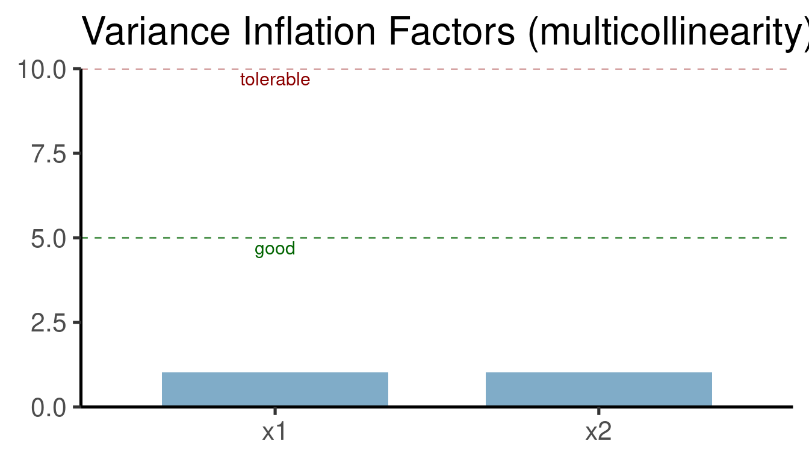
##
## [[2]]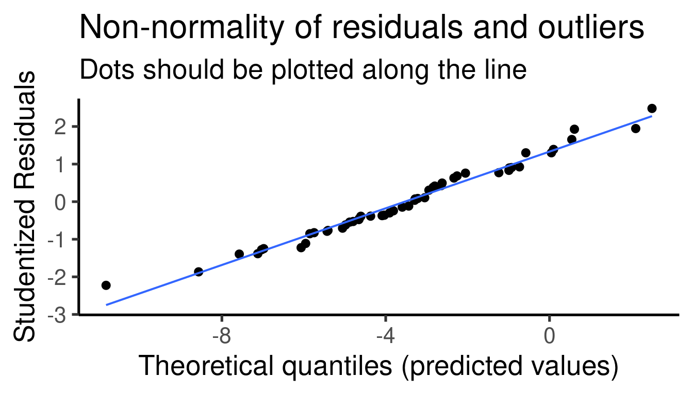
##
## [[3]]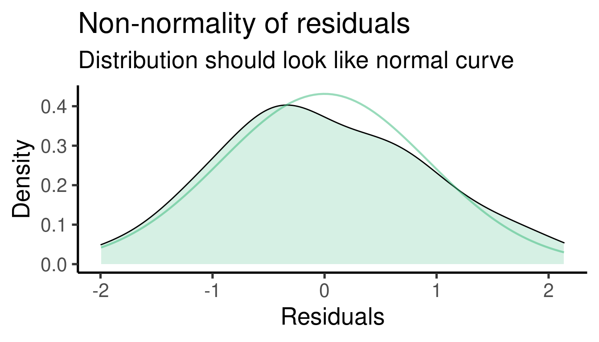
##
## [[4]]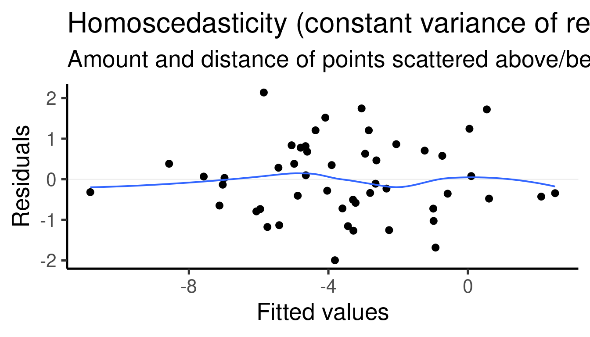
Coefficients table:
## Estimate Std. Error t value Pr(>|t|)
## (Intercept) -4.193018 0.5702328 -7.353168 2.697816e-09
## x1b 3.597411 0.8060688 4.462908 5.194964e-05
## x2 1.327353 0.6816129 1.947370 5.760963e-02
## x1b:x2 -2.971961 0.9622652 -3.088505 3.406062e-03The model found that \(\beta_1\) (the effect size of ‘x1-b’ to ‘x1-a’) is 3.5974112 and that it is significantly different from 0 (p-value = 5.1949639^{-5})
The model found that \(\beta_2\) (the effect size of ‘x2’) is 1.3273528 and that it is significantly different from 0 (p-value = 0.0576096). This is actually the slope of the relation between x2 and y when x1 = ‘a’
The model found that \(\beta_3\) (the effect size of the interaction term ‘x1 * x2’) is -2.9719608 and that it is significantly different from 0 (p-value = 0.0034061). This is the difference between the slopes of x2 vs y when x1 = ‘a’ and x2 vs y when x1 = ‘b’.
The simulated values for the regression parameters can be compared to the summary of the
lm()model to get a sense of the model precision:\(\beta_1\) was set to 3 and was estimated as 3.597
\(\beta_2\) was set to 1.7 and was estimated as 1.327
\(\beta_3\) was set to -3 and was estimated as -2.972
Ejercicio
Modified the code use to simulate a single associated predictor by gradually increasing the error. This is done by increasing the ‘sd’ argument in
error <- rnorm(n = n, sd = 2)Take a look at how larger errors affect inference (so you also need to run the models)
Now replace the error term with
error <- rexp(n = n, rate = 0.2). This is creating an error with an exponential distribution (so non-normal). This is supposed to be problematic for the inferential power of these models. Compare the estimates you got to the simulation values (‘b0’ and ‘b1’). Explore the distribution of residuals (plot(model_name)) for both ‘normal’ and ‘exponential’ error models.Collinearity (the presence of correlated predictors) is supposed to affect the stability of multiple regression. The following code creates two highly collinear predictors (‘x1’ and ‘x2’). The last line of code shows the correlation between them.
# set seed
set.seed(123)
# number of observations
n <- 50
b0 <- -4
b1 <- 3
b2 <- -2
error <- rnorm(n = n, mean = 0, sd = 1)
# random variables
x1 <- rnorm(n = n, mean = 0, sd = 1)
# make x2 very similar to x2 (adding little variation)
x2 <- x1 + rnorm(n = n, mean = 0, sd = 0.3)
cor(x1, x2)## [1] 0.9464161Build a multiple regression model for this data (y ~ x1 + x2). You can use the same code as in the section Adding more than 1 predictor: multiple regression.
How is the inference affected by the presence of collinear predictors? Make the diagnostic plots for this model (
plot(model_name)).Simulate a data set with three predictors in which only two of them are highly collinear. Fit a multiple regression model (y ~ x1 + x2 + x3) for that data and look at how collinearity affects the estimate for the non-collinear predictor.
Extending the linear models to more complex data structures
Generalized linear models
GLM’s allow us to model the association to response variables that do not fit to a normal distribution. Furthermore, they allow to model distributions that more closely resemble the process that generated the data. The following data set creates a data set with a response representing counts (so non-normal):
set.seed(1234)
# sample size
n <- 50
# regression coefficients
b0 <- 1.2
b1 <- 1.3
b2 <- 0
# generate variables
y <- rpois(n = 3, lambda = 6.5) # lambda = average rate of success
x2 <- seq(-0.5, 0.5, , length(y))
x1 <- (log(y) - b0 - b2 * x2)/b1
# create data frame
xy_data_pois <- data.frame(x1, x2, y)
head(xy_data_pois)| x1 | x2 | y |
|---|---|---|
| 0.1433 | -0.5 | 4 |
| 0.5738 | 0.0 | 7 |
| 0.5738 | 0.5 | 7 |
Let also plot ‘x1’ vs ‘y’:
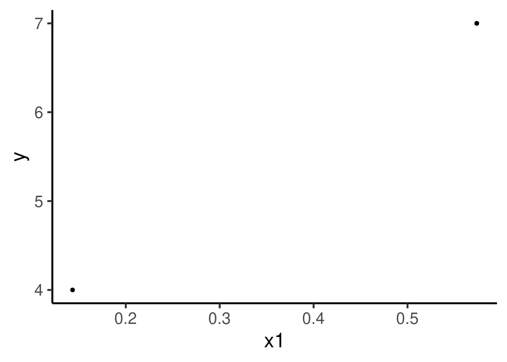
The relation does not seem very linear nor the variance seems to be constant across ‘x1’.
We can relaxed the normal distribution requirement with GLMs.
glm() is a base R function that help us do the trick. For
this example the most appropriate distribution is Poisson. This
can be set in the ‘family’ argument like this:
As you can see the only extra argument compared to lm()
is ‘family’. The rest is just the ‘formula’ and ‘data’ we are already
familiar with. So again, we can build upon of our knowledge on linear
models to extend them to more complex data structures.
We also need to run summary() to get model output:
##
## Call:
## glm(formula = y ~ x1 + x2, family = poisson(), data = xy_data_pois)
##
## Deviance Residuals:
## [1] 0 0 0
##
## Coefficients:
## Estimate Std. Error z value Pr(>|z|)
## (Intercept) 1.200e+00 1.046e+00 1.147 0.251
## x1 1.300e+00 2.281e+00 0.570 0.569
## x2 1.187e-16 1.069e+00 0.000 1.000
##
## (Dispersion parameter for poisson family taken to be 1)
##
## Null deviance: 1.0725e+00 on 2 degrees of freedom
## Residual deviance: 2.6645e-15 on 0 degrees of freedom
## AIC: 16.881
##
## Number of Fisher Scoring iterations: 3
Coefficients table:
## Estimate Std. Error z value Pr(>|z|)
## (Intercept) 1.200000e+00 1.046119 1.147097e+00 0.2513416
## x1 1.300000e+00 2.281163 5.698848e-01 0.5687558
## x2 1.186878e-16 1.069045 1.110223e-16 1.0000000The model tells us that \(\beta_1\) (the effect size of ‘x1’) is 1.3 and that it is significantly different from 0 (p-value = 0.5687558). This is actually interpreted as an increase in 1 unit of ‘x1’ results in ‘y’ (rate) by a factor of exp(1.3) = 3.6692967.
The model also tells us that \(\beta_2\) (the effect size of ‘x2’) is 1.1868783^{-16} and that it is significantly different from 0 (p-value = 1). This is means that an increase in 1 unit of ‘x2’ results in ‘y’ (rate) by a factor of exp(1.1868783^{-16}) = 1.
Ejercicio
- Try fitting a
lm()model (so with a gaussian distribution), compare the results and check the residuals (plot_model(model_name, type = "diag"))
Many other distribution and link functions are available:

Mixed-effect models
Sometimes our data sets include additional levels of structure. For instance, when we sample several individuals from different populations. In those cases variation at the higher structural level (populations) might preclude detecting patterns at the lower level (individuals).
Let’s simulate some data that resembles that scenario. We have two continuous predictor (x1) and a continuous response (y). Each sample comes from 1 of 8 different populations (pops):
# x<- 1 set seed
set.seed(28)
# number of observations
n <- 300
b0 <- 1
b1 <- 1.3
pops <- sample(0:8, size = n, replace = TRUE)
error <- rnorm(n = n, mean = 0, sd = 2)
# random variables
x1 <- rnorm(n = n, mean = 0, sd = 1)
y <- b0 + pops * 2 + b1 * x1 + error
# add letters
pops <- letters[pops + 1]
# create data set
xy_data_pops <- data.frame(x1, y, pops)
head(xy_data_pops, 10)| x1 | y | pops |
|---|---|---|
| 1.5461 | 3.3378 | a |
| 0.5683 | 3.1400 | a |
| -0.6385 | 15.2824 | i |
| 0.9842 | 2.6610 | a |
| 1.0536 | 3.7312 | b |
| -0.8229 | 3.0189 | a |
| -1.3237 | 3.2186 | c |
| 2.1785 | 19.0542 | i |
| 2.2648 | 15.4549 | i |
| -0.7784 | 11.6670 | h |
We can explore the relation between y and x1 with a plot:

can you clearly see the pattern of association between the two variables we used to simulate the data? We can further explore the data with a simple linear regression model:
##
## Call:
## lm(formula = y ~ x1, data = xy_data_pops)
##
## Residuals:
## Min 1Q Median 3Q Max
## -11.7547 -5.1191 0.1855 4.6016 12.4090
##
## Coefficients:
## Estimate Std. Error t value Pr(>|t|)
## (Intercept) 8.8520 0.3253 27.214 <2e-16 ***
## x1 0.6332 0.3292 1.924 0.0554 .
## ---
## Signif. codes: 0 '***' 0.001 '**' 0.01 '*' 0.05 '.' 0.1 ' ' 1
##
## Residual standard error: 5.628 on 298 degrees of freedom
## Multiple R-squared: 0.01226, Adjusted R-squared: 0.008949
## F-statistic: 3.7 on 1 and 298 DF, p-value: 0.05537
Despite having simulated a non-zero \(\beta_1\) we have no significant association according to this model and the estimated for \(\beta_1\) is far from the simulated one. This poor inference is due to the fact that we are ignoring an important feature of our data, the grouping of samples in ‘populations’.
Mixed-effect models (a.k.a. multi-level models or varying effect models) can help us account for these additional features, significantly improving our inferential power. Let’s color each of the populations to see how the variables co-vary for each data sub-group:
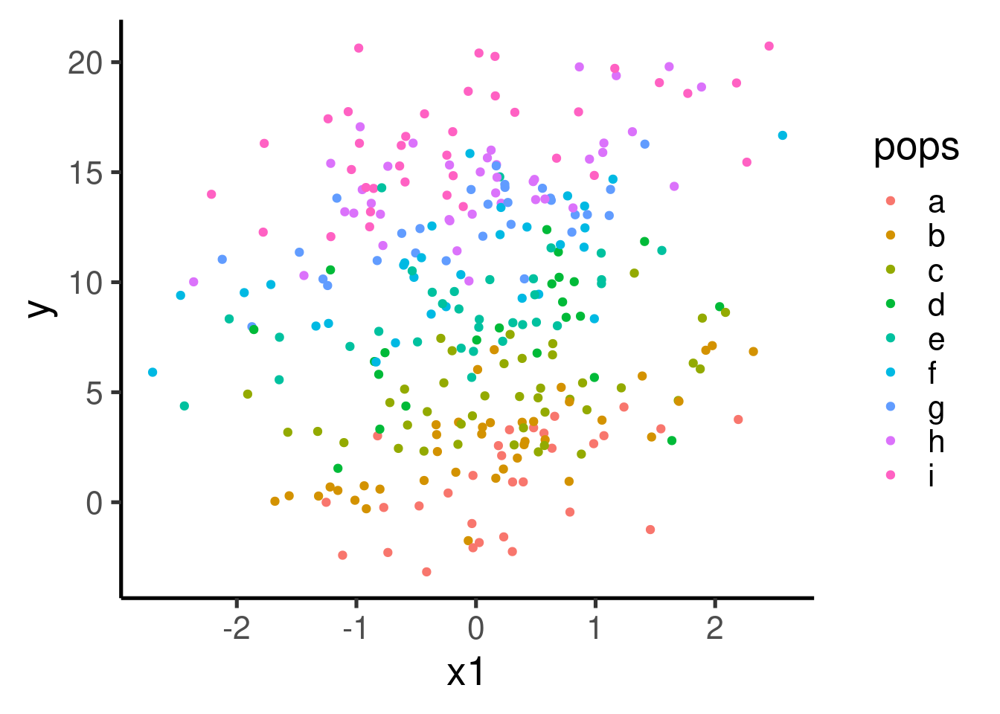
There seems to be a clear pattern of positive association between x1 and y. The pattern becomes a bit more obvious if we plot each population in its own panel:
ggplot(data = xy_data_pops, aes(x = x1, y = y, color = pops)) + geom_point() +
facet_wrap(~pops) + geom_smooth(method = "lm", se = FALSE)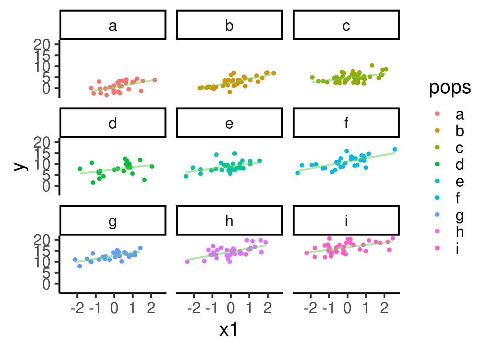
Let’s build a mixed-effect model using population as a varying intercept:
## Linear mixed model fit by REML. t-tests use Satterthwaite's method [
## lmerModLmerTest]
## Formula: y ~ x1 + (1 | pops)
##
## REML criterion at convergence: 1296.4
##
## Scaled residuals:
## Min 1Q Median 3Q Max
## -3.5236 -0.6575 -0.0316 0.6124 3.2454
##
## Random effects:
## Groups Name Variance Std.Dev.
## pops (Intercept) 30.073 5.484
## Residual 3.762 1.940
## Number of obs: 300, groups: pops, 9
##
## Fixed effects:
## Estimate Std. Error df t value Pr(>|t|)
## (Intercept) 8.7881 1.8315 8.0031 4.798 0.00136 **
## x1 1.3166 0.1151 290.0679 11.440 < 2e-16 ***
## ---
## Signif. codes: 0 '***' 0.001 '**' 0.01 '*' 0.05 '.' 0.1 ' ' 1
##
## Correlation of Fixed Effects:
## (Intr)
## x1 -0.003
The model correctly detected the simulated pattern and the estimate for \(\beta_1\) (1.3166493) is very close to the simulated value.
References
Session information
## R version 4.1.1 (2021-08-10)
## Platform: x86_64-pc-linux-gnu (64-bit)
## Running under: Ubuntu 20.04.2 LTS
##
## Matrix products: default
## BLAS: /usr/lib/x86_64-linux-gnu/blas/libblas.so.3.9.0
## LAPACK: /usr/lib/x86_64-linux-gnu/lapack/liblapack.so.3.9.0
##
## locale:
## [1] LC_CTYPE=es_ES.UTF-8 LC_NUMERIC=C
## [3] LC_TIME=es_CR.UTF-8 LC_COLLATE=es_ES.UTF-8
## [5] LC_MONETARY=es_CR.UTF-8 LC_MESSAGES=es_ES.UTF-8
## [7] LC_PAPER=es_CR.UTF-8 LC_NAME=C
## [9] LC_ADDRESS=C LC_TELEPHONE=C
## [11] LC_MEASUREMENT=es_CR.UTF-8 LC_IDENTIFICATION=C
##
## attached base packages:
## [1] stats graphics grDevices utils datasets methods base
##
## other attached packages:
## [1] car_3.1-0 carData_3.0-5 sjPlot_2.8.10 lmerTest_3.1-3
## [5] lme4_1.1-29 Matrix_1.3-4 viridis_0.6.2 viridisLite_0.4.0
## [9] ggplot2_3.3.6 knitr_1.39 kableExtra_1.3.4
##
## loaded via a namespace (and not attached):
## [1] httr_1.4.3 sass_0.4.1 tidyr_1.2.0
## [4] jsonlite_1.8.0 splines_4.1.1 modelr_0.1.8
## [7] bslib_0.3.1 datawizard_0.4.1 assertthat_0.2.1
## [10] highr_0.9 yaml_2.3.5 bayestestR_0.12.1
## [13] numDeriv_2016.8-1.1 pillar_1.8.0 backports_1.4.1
## [16] lattice_0.20-44 glue_1.6.2 uuid_1.1-0
## [19] digest_0.6.29 rvest_1.0.2 minqa_1.2.4
## [22] colorspace_2.0-3 htmltools_0.5.3 pkgconfig_2.0.3
## [25] broom_0.8.0 purrr_0.3.4 xtable_1.8-4
## [28] mvtnorm_1.1-3 scales_1.2.0 webshot_0.5.3
## [31] svglite_2.1.0 emmeans_1.7.4-1 tibble_3.1.8
## [34] mgcv_1.8-36 farver_2.1.1 generics_0.1.2
## [37] sjlabelled_1.2.0 withr_2.5.0 cli_3.3.0
## [40] magrittr_2.0.3 effectsize_0.7.0 estimability_1.3
## [43] evaluate_0.15 fansi_1.0.3 nlme_3.1-152
## [46] MASS_7.3-54 xml2_1.3.3 tools_4.1.1
## [49] formatR_1.12 lifecycle_1.0.1 stringr_1.4.0
## [52] munsell_0.5.0 ggeffects_1.1.2 compiler_4.1.1
## [55] jquerylib_0.1.4 systemfonts_1.0.4 rlang_1.0.4
## [58] grid_4.1.1 nloptr_2.0.3 parameters_0.18.1
## [61] rstudioapi_0.13 labeling_0.4.2 rmarkdown_2.14
## [64] xaringanExtra_0.7.0 boot_1.3-28 gtable_0.3.0
## [67] abind_1.4-5 sjstats_0.18.1 DBI_1.1.3
## [70] sjmisc_2.8.9 R6_2.5.1 gridExtra_2.3
## [73] dplyr_1.0.9 performance_0.9.0 fastmap_1.1.0
## [76] utf8_1.2.2 insight_0.17.1 stringi_1.7.8
## [79] Rcpp_1.0.9 vctrs_0.4.1 tidyselect_1.1.2
## [82] xfun_0.31 coda_0.19-4